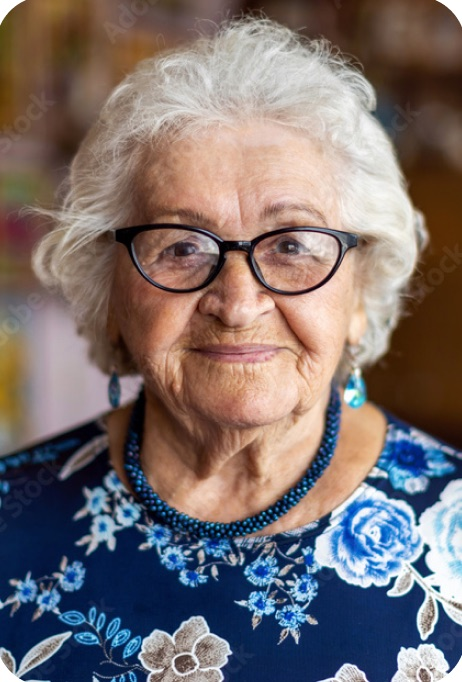

Optio Senioris: Latin for “the choice of the Senior”
In Roman military history an Optio was a junior officer and second-in-command. He was the leader’s right-hand man, responsible for enforcing discipline, managing the troops and making it happen, taking command if the leader was killed or sick.
Senioris was used to distinguish a more seasoned, higher-ranking Optio, showing dignity, deference and respect.
And that is our essence.
We step in as professionals and provide care in a crisis, when the client can no longer cope.
We advocate for the patient, on your behalf
We advocate for the patient as professionals with a wealth of geriatric care experience when you have reached crisis point and need third-party intervention.
With 50 years of professional, clinical, commercial, environmental, financial and situational experience, we can navigate you through the often challenging and distressing aging process and the services and support available to you. We point out the pitfalls and how to avoid them, signpost you to the most appropriate care for your circumstances, and help to swiftly resolve the adversity you are facing.
Why choose us
Professionals who make it happen
Care in a crisis
Third-party intervention when you have reached crisis point and can no longer cope alone.
50 years of experience
Professional, clinical, commercial, environmental, financial and situational experience to guide you past the pitfalls.
Optimism and resilience
We choose to maintain a positive, optimistic attitude, with cheer and resilience, whatever the challenge.
Unapologetically faith based
We believe a better life awaits us all, and that it is our job to give your loved one the best send-off possible.
The reality of life
“We are all born to die”
From the minute we take our first breath, the ultimate destination is death, and that last season of our lives, with its ailments, infirmity and mobility issues, can be quite challenging.
But it does not have to be dire and depressing. It is a journey: the end journey to a better life ahead.
We at Optio Senioris are unapologetically faith based. We see ourselves as God’s angels here on earth. No one is ever prepared and ready to die, but despite the conflicts and challenges of the end journey we believe a better life awaits us all. It is our job to give your loved one the best send-off possible, and to help you support and enjoy every last day with them.
As Monty Python’s best-loved song has it, always look on the bright side of life: no matter how hard the situation, you can still choose to smile, sing and face the end with grace, dignity and respect.

Funding
Paying for care: know your options
We can navigate you through the services and support available to you, point out the pitfalls and how to avoid them, and signpost you to the most appropriate funding for your particular circumstances.

Contact us